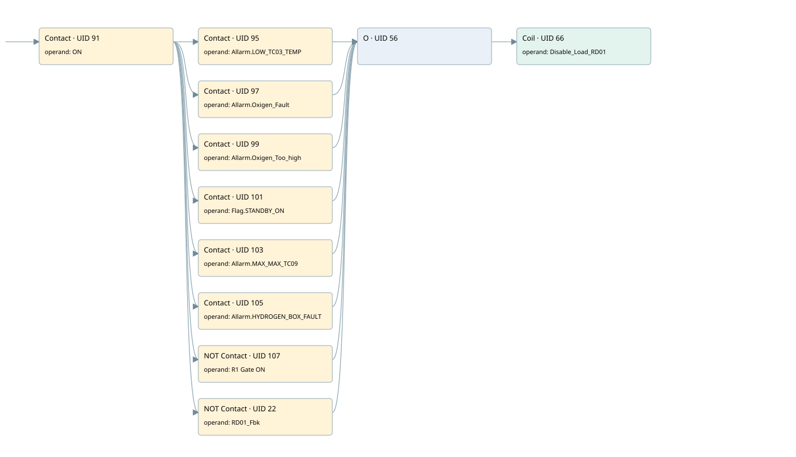

block load
motors 1 · 검색 색인 순서 2 · 원본 내부 NID 추정 2
백업 PLF 원본의 2777442 바이트 위치에서 복원한 XML. 검색 문서 1931의 객체 키 161022007e11000000000000와 연결했다. 이름 해석 10/10개. 남은 RefId는 상수 또는 미해석 참조다.
연결 구조 다시 그리기
원본 Part/PCon/Wire를 이용한 연결도다. TIA 화면의 래더 배치 또는 실행 결과를 재현한 그림은 아니다. 핀 연결은 아래 표와 원본 XML을 기준으로 읽는다. 노드 위에 마우스를 두면 피연산자 이름을 볼 수 있다.

접점·코일·블록과 피연산자
| Part UID | Gate | Negated 핀 | 연결 피연산자 |
|---|---|---|---|
| 91 | Contact | operand = ON | |
| 95 | Contact | operand = Allarm.LOW_TC03_TEMP | |
| 97 | Contact | operand = Allarm.Oxigen_Fault | |
| 99 | Contact | operand = Allarm.Oxigen_Too_high | |
| 101 | Contact | operand = Flag.STANDBY_ON | |
| 103 | Contact | operand = Allarm.MAX_MAX_TC09 | |
| 105 | Contact | operand = Allarm.HYDROGEN_BOX_FAULT | |
| 107 | Contact | operand | operand = R1 Gate ON |
| 22 | Contact | operand | operand = RD01_Fbk |
| 56 | O | ||
| 66 | Coil | operand = Disable_Load_RD01 |
접점 경로를 펼친 조건식
Contact·O/A·비교기의 원본 연결을 읽기 쉽게 펼친 보조 해석이다. POWER는 전원 레일 시작을 뜻한다. 호출 블록·에지·타이머의 내부 동작과 다중 쓰기 순서는 이 표로 실행 검증하지 않았다. 미해석 핀과 RefId는 원문 연결표에서 확인한다.
| UID | 동작 | 대상 | 원본 접점 경로 | 내용 |
|---|---|---|---|---|
| 66 | Coil | Disable_Load_RD01 | ((ON AND Allarm.LOW_TC03_TEMP) OR (ON AND Allarm.Oxigen_Fault) OR (ON AND Allarm.Oxigen_Too_high) OR (ON AND Flag.STANDBY_ON) OR (ON AND Allarm.MAX_MAX_TC09) OR (ON AND Allarm.HYDROGEN_BOX_FAULT) OR (ON AND NOT [R1 Gate ON]) OR (ON AND NOT [RD01_Fbk])) | 조건에 따른 Coil 기록 |
원본 배선 연결
| Wire UID | 동일 Wire 연결 끝점 |
|---|---|
| 111 | Powerrail {} ↔ Part 91.in |
| 78 | ORef 67 (ON) ↔ Part 91.operand |
| 92 | Part 91.out ↔ Part 95.in ↔ Part 97.in ↔ Part 99.in ↔ Part 101.in ↔ Part 103.in ↔ Part 105.in ↔ Part 107.in ↔ Part 22.in |
| 80 | ORef 69 (Allarm.LOW_TC03_TEMP) ↔ Part 95.operand |
| 96 | Part 95.out ↔ Part 56.in1 |
| 81 | ORef 70 (Allarm.Oxigen_Fault) ↔ Part 97.operand |
| 98 | Part 97.out ↔ Part 56.in2 |
| 82 | ORef 71 (Allarm.Oxigen_Too_high) ↔ Part 99.operand |
| 100 | Part 99.out ↔ Part 56.in3 |
| 83 | ORef 72 (Flag.STANDBY_ON) ↔ Part 101.operand |
| 102 | Part 101.out ↔ Part 56.in4 |
| 84 | ORef 73 (Allarm.MAX_MAX_TC09) ↔ Part 103.operand |
| 104 | Part 103.out ↔ Part 56.in5 |
| 85 | ORef 74 (Allarm.HYDROGEN_BOX_FAULT) ↔ Part 105.operand |
| 106 | Part 105.out ↔ Part 56.in6 |
| 86 | ORef 75 (R1 Gate ON) ↔ Part 107.operand |
| 108 | Part 107.out ↔ Part 56.in7 |
| 21 | ORef 23 (RD01_Fbk) ↔ Part 22.operand |
| 24 | Part 22.out ↔ Part 56.in8 |
| 88 | Part 56.out ↔ Part 66.in |
| 90 | ORef 77 (Disable_Load_RD01) ↔ Part 66.operand |
식별자 해석 근거 10개
| ORef UID | RefId | 이름 | IdentXmlPart 파일 | 해석 방법 |
|---|---|---|---|---|
| 67 | 1 | ON | 0602-IdentXmlPart.xml | UID/RID + search-text + NID agreement |
| 69 | 8 | Allarm.LOW_TC03_TEMP | 0604-IdentXmlPart.xml | UID/RID + search-text + NID agreement |
| 70 | 9 | Allarm.Oxigen_Fault | 0604-IdentXmlPart.xml | UID/RID + search-text + NID agreement |
| 71 | 10 | Allarm.Oxigen_Too_high | 0604-IdentXmlPart.xml | UID/RID + search-text + NID agreement |
| 72 | 11 | Flag.STANDBY_ON | 0604-IdentXmlPart.xml | UID/RID + search-text + NID agreement |
| 73 | 12 | Allarm.MAX_MAX_TC09 | 0604-IdentXmlPart.xml | UID/RID + search-text + NID agreement |
| 74 | 13 | Allarm.HYDROGEN_BOX_FAULT | 0604-IdentXmlPart.xml | UID/RID + search-text + NID agreement |
| 75 | 14 | R1 Gate ON | 0602-IdentXmlPart.xml | UID/RID + search-text + NID agreement |
| 23 | 276 | RD01_Fbk | 0602-IdentXmlPart.xml | UID/RID + search-text + NID agreement |
| 77 | 16 | Disable_Load_RD01 | 0605-IdentXmlPart.xml | UID/RID + search-text + NID agreement |
검색 코드 보조 자료
참조 명칭을 찾기 위한 자료이며 실행 순서나 AND/OR 관계는 위 연결표로 확인한다.
"on" "allarm".low_tc03_temp #disable_load_rd01 "allarm".oxigen_fault "allarm".oxigen_too_high "flag".standby_on "allarm".max_max_tc09 "allarm".hydrogen_box_fault "r1 gate on" "rd01_fbk"